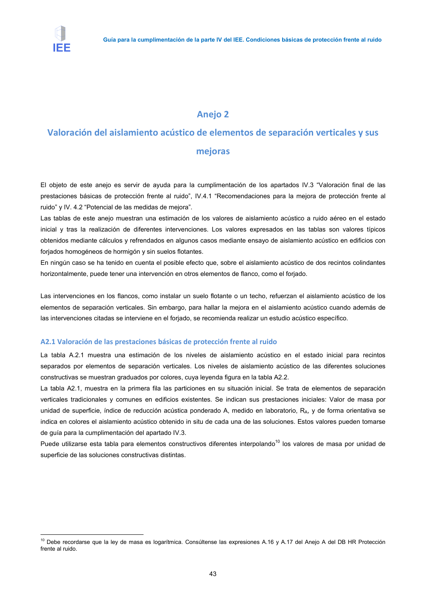

GUIA · Anejo 2 Valoración del aislamiento acústico de elementos de separación verticales y sus · versión 2016-11-01 · capa guia
Formatos: JSON compacto · Markdown · PDF fuente
Ámbito del documento · texto del ámbito · documento y tablas
Tipo: figuras · nivel 1 · sección estimada: Anejo 2 Valoración del aislamiento acústico de elementos de separación verticales y sus · padre:
Anejo 2 Valoración del aislamiento acústico de elementos de separación verticales y sus Valoración del aislamiento acústico de elementos de separación verticales y sus

PDF fuente redistribuible: copia fiel enlazada en esta página (SHA256 verificado).